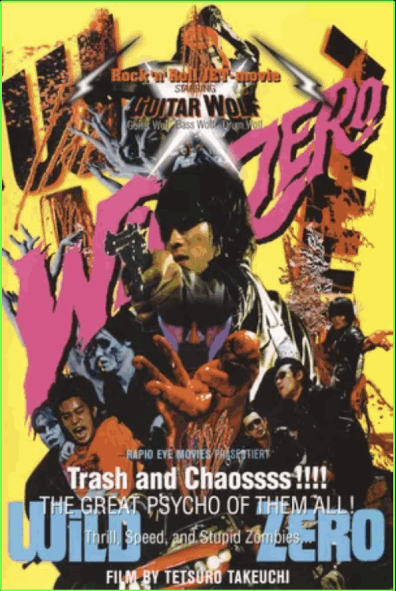

“Wild Zero” (1999) is a Japanese punk rock zombie film starring the real life
rock band Guitar Wolf. The film mixes elements of movies like Dawn Of The Dead with
the sound and energy of bands like the Ramones. The movie is a must see for it's soundtrack alone,
ROCK AND ROLLLLL!!!!!!
Fun Facts:
• The band Guitar Wolf plays fictional versions of themselves.
• The film encourages a drinking game based on repeated tropes.
• Director Tetsuro Takeuchi was inspired by the films of George A. Romero.